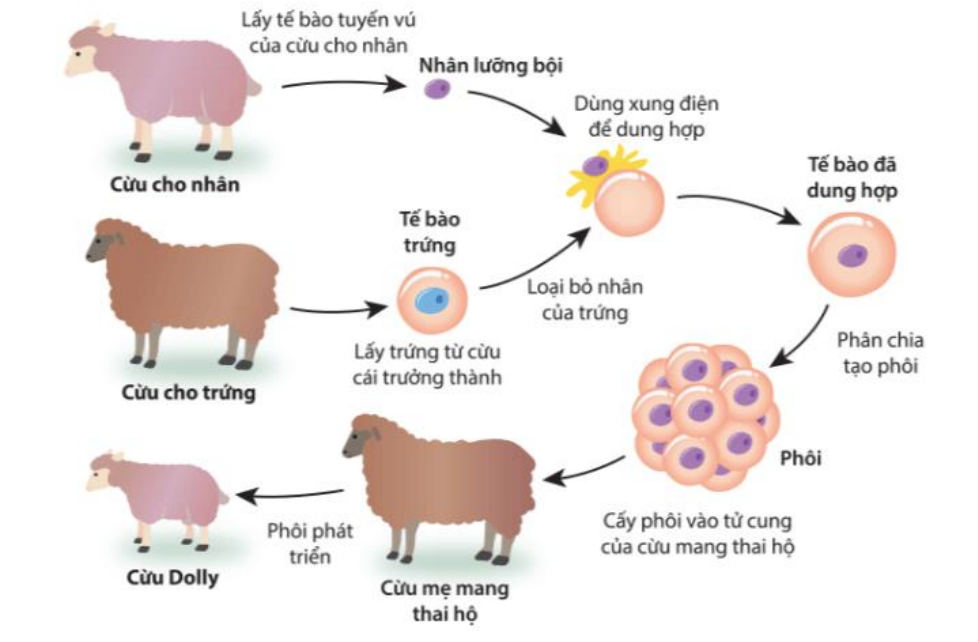
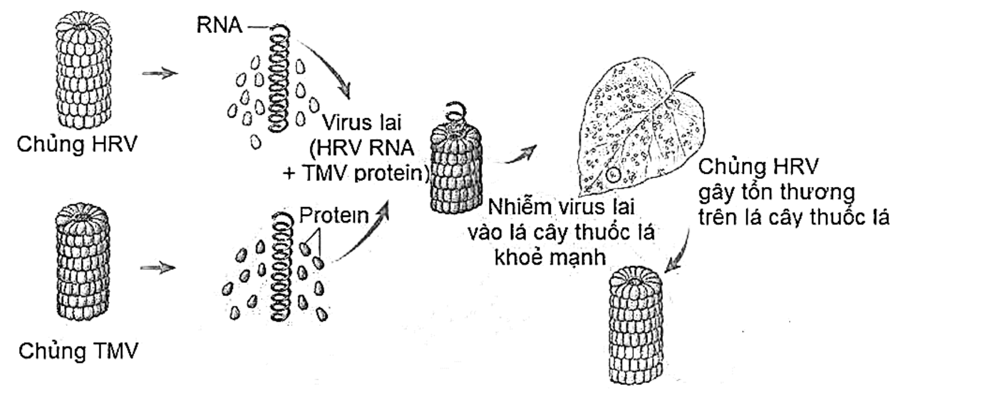
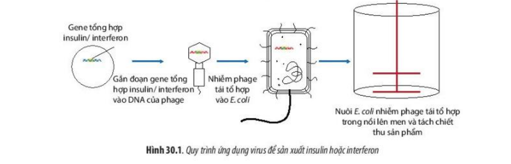
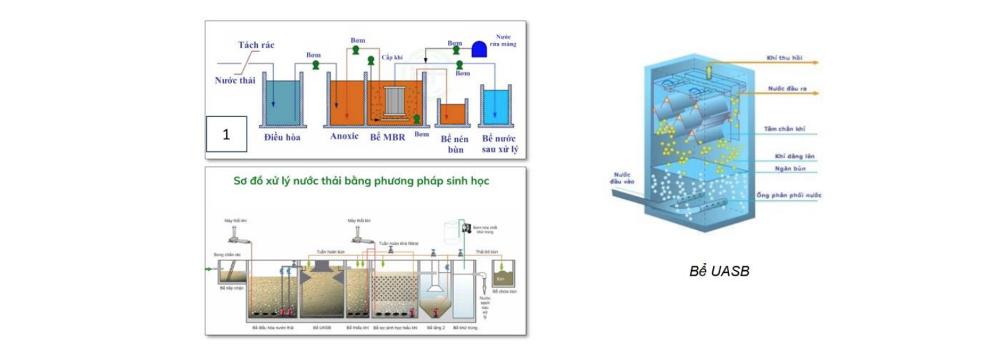
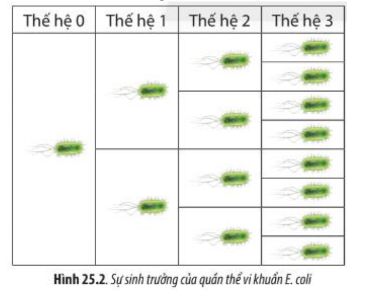

Ð? thi: Ki?m tra cu?i k? 2 - Sinh h?c 10
Th?i gian: 45 phút | T?ng di?m: 10 di?m
B?n dã thoát ch? d? toàn màn hình!
Vui lòng nh?n nút bên du?i d? ti?p t?c làm bài trong ch? d? toàn màn hình.
?? Hành vi này dã du?c ghi nh?n

Hinh 3. Quy trinh nhan ban vo tinh (cay truyen phoi)

Hinh: Thi nghiem lai virus HRV va TMV (Frankel-Conrat, 1957) - RNA quyet dinh dac diem di truyen

Hinh 30.1. Quy trinh ung dung virus de san xuat insulin hoac interferon

Hinh: Cac phuong phap xu ly nuoc thai bang phuong phap sinh hoc (Be UASB)

Hinh 25.2. Su sinh truong cua quan the vi khuan E. coli
T?ng di?m: 10 di?m Ph?n I: 0/3d | Ph?n II: 0/2d | Ph?n III: 0/2d | Ph?n IV: 0/3d
Vui lòng ch? trong giây lát
? K?t qu? dã du?c luu vào Google Sheets